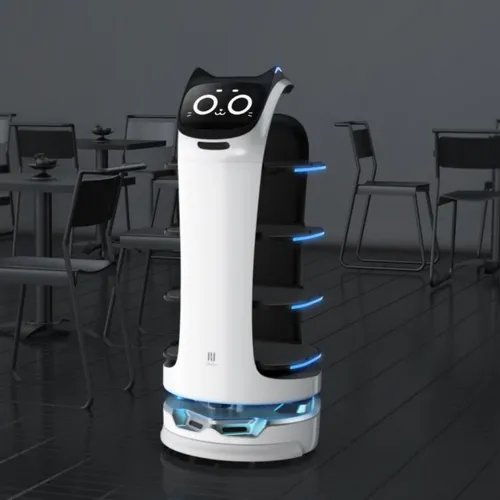

China Robotics Market Size 2026: The Data Behind the World's #1 Robot Market
RMB 300B+ 2025 revenue, 28% of global demand, and the fastest-growing segments — sized with sources.
China invented nothing in service robotics — iRobot built the first robot vacuum, Starship the first sidewalk delivery robot, SoftBank the first humanoid receptionist — but it now ships more than 85% of global robot-vacuum units, runs the world's largest warehouse AMR fleet, and is scaling Pudu, Geek+ and Gausium across restaurants, malls and hospitals from Berlin to Singapore. The story of China's service-robot dominance is not a hardware story anymore; it is a software story — dispatch, fleet, and cloud brain — and the US and Europe are no longer winning it.

Ask anyone outside robotics who makes service robots and they will name iRobot (US), Roomba, Starship (Estonia/US), or SoftBank (Japan). Ask anyone inside a Shenzhen electronics mall and they will hand you a Pudu, a Geek+, or a Roborock — all of which now sell better in Berlin and San Francisco than the Western originals. This is the quietest Chinese industrial victory of the 2020s: not the humanoid, not the EV, but the mundane machines that deliver food, mop floors, and vacuum living rooms.
IDC sizes China's commercial service-robot market at near $400 million in 2026 — delivery, cleaning, hospitality, disinfection and patrolling. The consumer layer is an order of magnitude larger but hard to size cleanly, because robot vacuums sit inside "home appliances." The structural share figure is the one that matters: Chinese brands account for more than 85% of global robot-vacuum shipments, and the same ratio is climbing fast in delivery and commercial cleaning as Pudu and Gausium open overseas subsidiaries.
| Segment | China 2026 size | China's global position | Leading vendors |
|---|---|---|---|
| Commercial service robots | ~$400M (IDC, 2026) | Fastest-growing national market | Pudu, Geek+, Gausium, Keenon |
| Robot vacuums / mops (consumer) | 85%+ of global shipments | Category king | Ecovacs, Roborock, Dreame, Narwal |
| Cloud robotics (software layer) | $449.5M (2025) → $2.84B (2035) | ~35% of global market | CloudMinds, Datta, Alibaba/Huawei/Tencent Cloud |
| Warehouse AMRs | World's largest installed base | #1 by shipments | Geek+, Quicktron, Hairobotics |
Sources: IDC (2026); Market Research Future (cloud robotics, Aug 2026); company filings. Market definitions differ; figures are directional.
Pudu Robotics (普渡) is the company that taught the world what a delivery robot looks like. Its BellaBot and KettyBot — the cat-faced ones — now ferry dishes in restaurants, hotels and hospitals across 60+ countries. Pudu did not invent the delivery robot; it industrialized it: lower price, faster iteration, and a fleet that learns from every restaurant it runs in. The US counterpart, Starship Technologies, operates sidewalk delivery in a handful of US and European cities but remains boutique; Pudu's installed base is orders of magnitude larger.
The software underneath is the moat. A delivery robot in a restaurant is not a single machine — it is a fleet of ten, each avoiding the same waiters, learning the same tables, and reporting back to a dispatch dashboard. Pudu's fleet OS, like Geek+'s rMs, is the product: the hardware is subsidized to win the deployment, the software is where the recurring revenue lives. This is the same playbook Amazon uses for its logistics robots, but at a price point 30-50% lower.
Geek+ (极智嘉) is the world's largest warehouse AMR maker by shipments — and almost no one outside logistics has heard of it. Its robots move shelves and totes in the warehouses of major retailers across the US, Europe, Japan and Southeast Asia. The Chinese competitors stacked behind it — Quicktron (快仓), Hairobotics (海柔创新) with its box-picking ACR system, and SEER Robotics (仙工智能) — are all scaling the same playbook: build the AMR hardware cheap, sell the fleet-management software as the recurring layer.
The US rival here is Amazon Robotics (formerly Kiva), which keeps most of its fleet in-house; the European rival is AutoStore (Norway), whose grid-based cube storage is premium-priced. Chinese AMRs undercut both on price and ship faster — a structural advantage that mirrors what Chinese solar and EV makers did to their Western rivals in the 2010s.
The robot vacuum is the first consumer robotics category where Chinese brands hold the majority. Ecovacs (科沃斯) started as a vacuum OEM in Suzhou in 1998 and built the Deebot brand; Roborock (石头科技), Xiaomi-backed and founded by Chang Jing, treated a vacuum as a software-hardware problem and listed on the STAR Market in 2020; Dreame (追觅) and Narwal (云鲸) attacked the mop and self-cleaning niche, with Narwal's self-washing mop robots becoming a global hit and its overseas orders reaching hundreds of millions of yuan in 2026. The US category leader iRobot — the company that invented the Roomba — struggled through the 2020s as Chinese brands took share.
The lesson from the vacuum is the template for everything else: build the supply chain, iterate fast, price aggressively, then take the product global. The vacuum was the first proof; delivery and cleaning are the second; the humanoid may be the third.
The fastest-growing part of China's service-robot market is not hardware at all — it is the software layer. Market Research Future sizes the China cloud robotics market at $449.5 million in 2025, growing to $2.84 billion by 2035 (20.2% CAGR), with China at roughly 35% of the global cloud-robotics market. Three pieces make up the stack:
The US still leads in foundation-model research for robotics — Google DeepMind's RT series, Figure's Helix, Tesla's Optimus software stack — but China leads in deployment: a model that runs on 100,000 Pudu robots learns faster than one that runs in a Mountain View lab.
| China | United States | Europe | |
|---|---|---|---|
| Consumer vacuums | 85%+ global shipments (Ecovacs, Roborock, Dreame, Narwal) | iRobot — struggled through 2020s, lost share | Miele, Vorwerk — premium niche, no global champion |
| Delivery robots | Pudu — 60+ countries, industrialized price point | Starship — boutique, limited geographies | Small local pilots, no scale player |
| Warehouse AMRs | Geek+ — world's largest by shipments | Amazon Robotics — in-house only | AutoStore (Norway) — premium grid, higher price |
| Software / cloud brain | CloudMinds, Datta, Alibaba/Huawei/Tencent Cloud | Google DeepMind RT, Figure Helix — model leadership | ABB/KUKA industrial software, weak consumer layer |
| Cost-down curve | Fastest — supply chain + volume | High R&D cost, slower iteration | Premium pricing, limited volume |
Read: China wins hardware and deployment; US wins model research; Europe holds premium industrial but has no consumer service-robot champion.
IDC puts China's commercial service-robot market near $400 million in 2026, and Chinese brands ship more than 85% of global robot-vacuum units. The consumer layer — robot vacuums, mops and lawn robots — is where China's dominance is most visible; the commercial layer (delivery, cleaning, hospitality) is where Chinese startups like Pudu, Geek+ and Gausium are now scaling abroad.
Delivery: Pudu Robotics (普渡); logistics AMRs: Geek+ (极智嘉), the world's largest warehouse AMR maker by shipments; commercial cleaning: Gausium (高仙); consumer: Ecovacs (科沃斯), Roborock (石头科技), Dreame (追觅) and Narwal (云鲸), which together own most of the global robot-vacuum category.
The software layer sits underneath the hardware: fleet-dispatch platforms (Geek+'s rMs), cloud-brain operating systems (CloudMinds HARIX, Datta Taisi OS), and cloud-robotics platforms on Alibaba Cloud, Huawei Cloud and Tencent Cloud. Market Research Future sizes China's cloud robotics market at $449.5 million in 2025, growing to $2.84 billion by 2035 (20.2% CAGR) — the fastest-growing slice of the service-robot software stack.
The US invented the robot vacuum (iRobot) and still leads in cloud-software platforms, but Chinese brands have taken the hardware: iRobot struggled through the 2020s while Ecovacs, Roborock and Narwal expanded globally. Europe leads in premium industrial automation (ABB, KUKA, Miele) but has no consumer robot-vacuum champion. China combines the demand base, the supply chain and the fastest cost-down curve.
Pudu serves restaurants, hotels and hospitals across 60+ countries; Geek+ operates warehouse AMRs for logistics customers in the US, Europe and Japan; Gausium ships commercial cleaning robots to malls and airports in dozens of countries; Narwal signed a strategic partnership with European group Sebo. The pattern is Chinese hardware, local channel partners, and price points 30-50% below Western rivals.
RMB 300B+ 2025 revenue, 28% of global demand, and the fastest-growing segments — sized with sources.
CloudMinds and Datta Robotics, a ¥412.6B domestic market, and the cloud-vs-on-device AI race.
Ecovacs vs Roborock vs Dreame vs Narwal — the brands behind 85%+ of global shipments.
The warehouse-robot stack, from navigation software to the AMR bodies themselves.
IDC data, policy drivers, and UBTECH, Makeblock, Dobot.
The same cost-down curve in service robots, now applied to humanoids.